Nessie
A private, secure app that helps students take care of their mental health. I led the team, prototyped the first screens every user sees and the breathing exercise, and drew our mascot, Nessie.
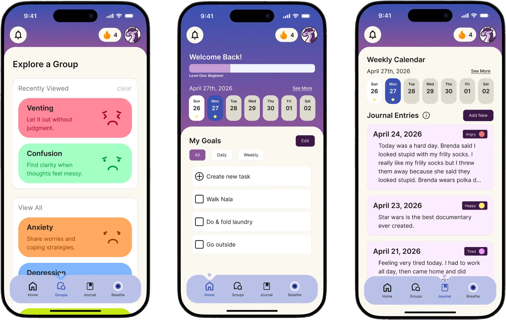
- Client
- Capstone26
- Timeline
- 4 months, 2026
- My role
- Project Manager, prototyper, and illustrator
- Tools
- Figma, FigJam, Rive, Pinterest, Teams
Overview
Students deserve a safe online space for regulating their mental health that is both secure and private. The tools that already existed were either too complex or locked behind paywalls.
What I did
Led a team of six
I pitched the idea, built the team, and ran the project as Project Manager.
ResearchHosted a user interview
What I learned shaped our login, personalization, and habit features.
PrototypingOnboarding, breathing, streaks, and achievements
I wireframed and prototyped the first screens every user sees, the guided breathing exercise, and the animations that reward users for coming back.
IllustrationDrew every Nessie
Our mascot, her expressions, nine profile icon colors, and the sticker.
Leading the team
I pitched the idea and gathered a team of six to bring Nessie to life, then led the project as Project Manager.
Weekly check-ins
I ran our weekly meetings and checked in with each teammate on their progress.
Weekly goals
I set the goals for each week and made sure everyone knew what was due and when.
Final edits
Teammates reviewed each other's work, and I made the final edits before every submission.
Our team charter
Our first document was a team equity charter that set our goals and how we'd work together.
- 24 hrsEvery milestone finished a day early for team review
- 5+User interviews in the first three weeks
- 1 / weekTeam meeting at minimum, in person or on Teams
The team
- Avery WrightProject Manager, prototyping, and illustration
- Allison JonesInterviewing and research
- Lilly MarusUI/UX design
- Dylon NoonUser research and Figma organization
- Bella PlymaleScheduling, documentation, and research
- Ava FloresVisual design and prototyping
Research
As a team, we started with problem identification, a literature review, competitive research, and user interviews.
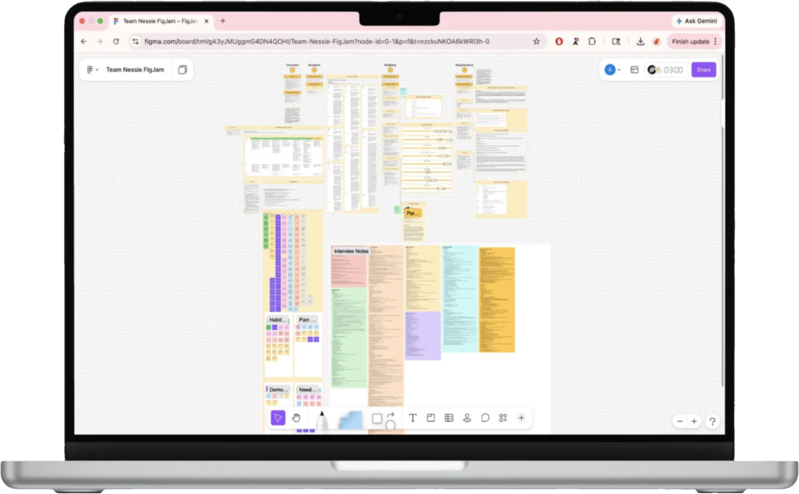
students and recent grads interviewed
similar products analyzed in our competitive research
My interview
I led a one-on-one interview on habits, design preferences, and privacy
The participant was a college student in our target audience, and her answers fed directly into the screens I went on to design.
She'd rather handle stress on her own than wait on someone else's availability.
Self-guided tools come first, and community is always optional.
In her last overwhelming moment, deep breaths are what got her through.
The guided breathing exercise I designed, plus a screen on why it helps.
Habits like journaling fade when she's tired.
Low-effort streaks and rewards, so consistency never feels like a chore.
She wants to feel safe, secure, and comfortable.
Face ID or a 4-digit PIN login, and an anonymous username.
Seeing a profile for whoever she's talking to builds trust.
Nine Nessie profile icons, so profiles feel personal without a photo.
Pastel colors, and personalization rated 7 out of 10 in importance.
A soft lilac and midnight blue palette with choices to make it your own.
What the team heard
Time is the biggest stressor
Students talked more about time management than mental health. Most already tracked everything in Google Calendar or a planner.
Less screen time, not more
Many wanted to spend less time on their phones, so the app had to be quick to use.
Privacy comes first
People wanted anonymous usernames and to keep their full name, email, and location private.
Two kinds of users
Some wanted quick, goal-focused check-ins. Others wanted longer reflection through journaling and community.
Faye Pearl, 22
Pre-med student taking four classes and working part-time as a server. She keeps a checklist in her Notes app but forgets to check it.
Her goals
- Relieve stress and stay on top of tasks
- Connect with others going through the same thing
- Have a safe, secure space
My designs
I wireframed and prototyped the landing page, onboarding, breathing exercise, streaks, and achievements, and illustrated Nessie throughout.
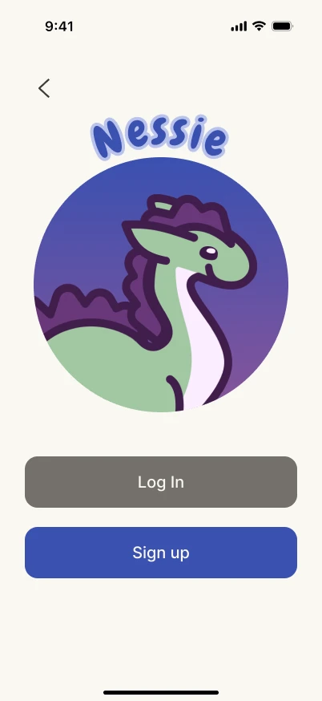
Landing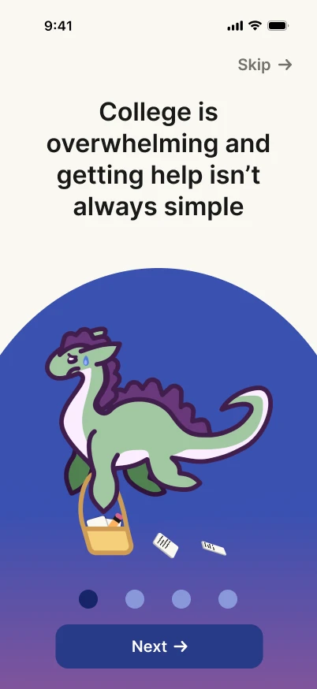
Onboarding 1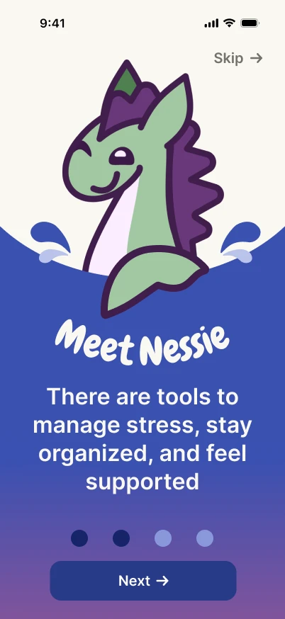
Onboarding 2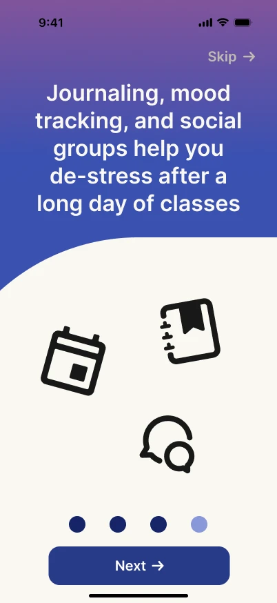
Onboarding 3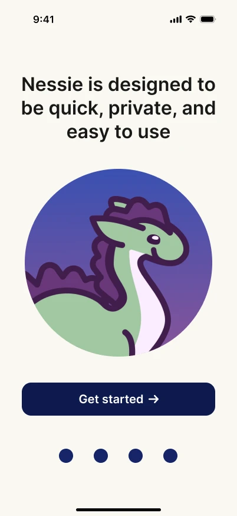
Onboarding 4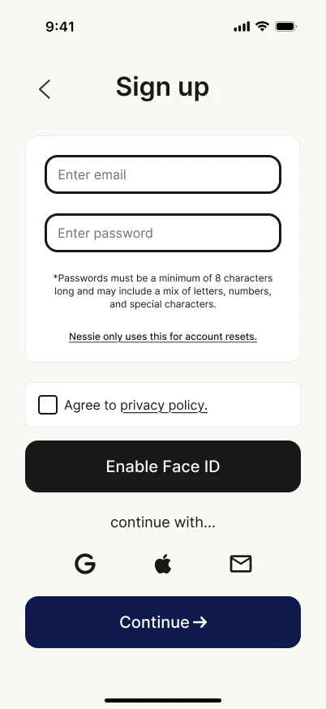
Sign up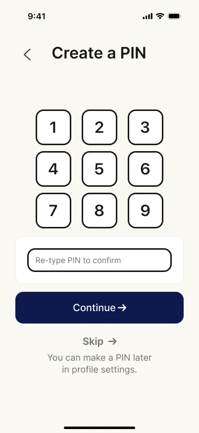
Create a PIN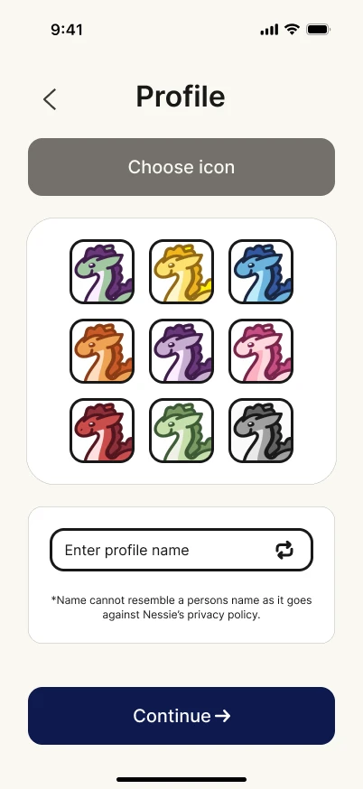
Profile icon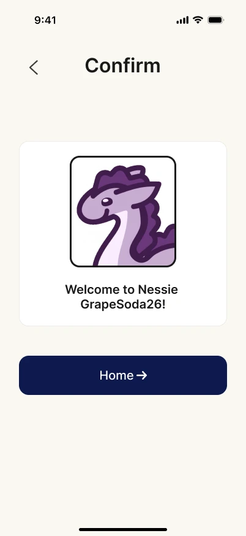
Welcome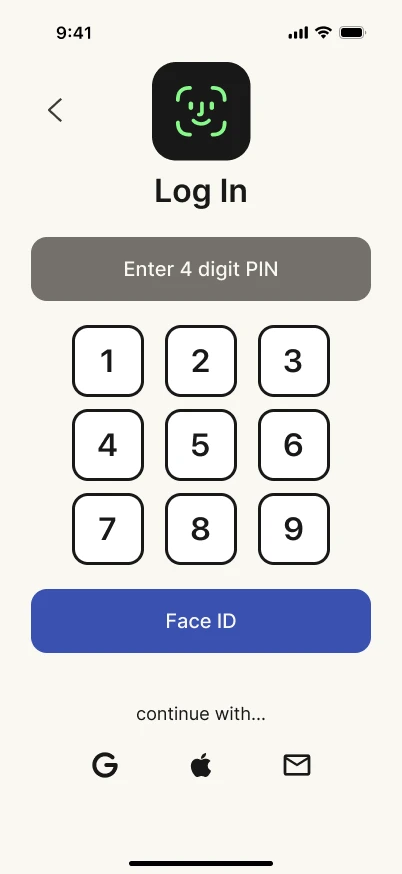
Log in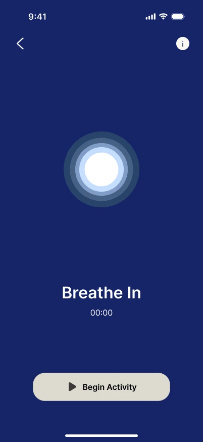
Breathing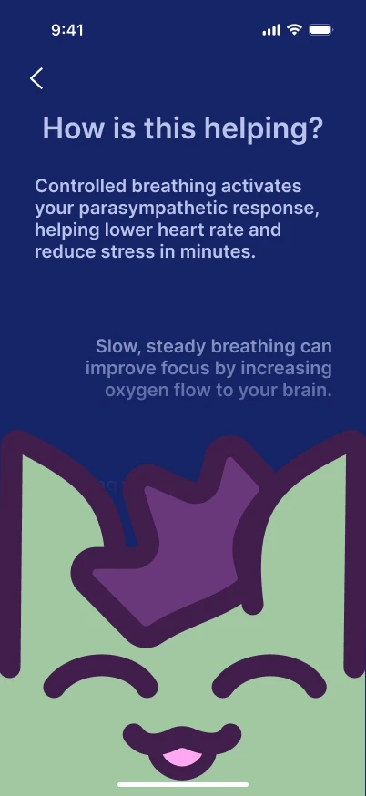
Why it helps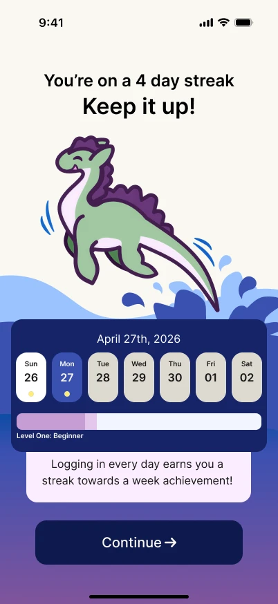
Streak
From wireframe to final
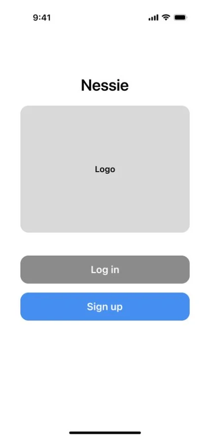
Wireframe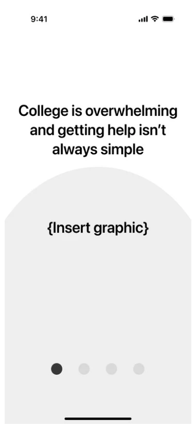
Wireframe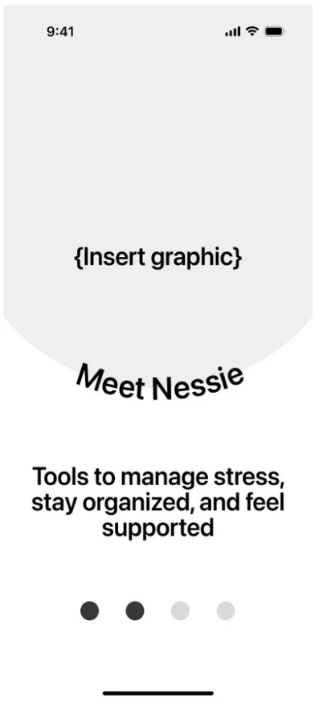
Wireframe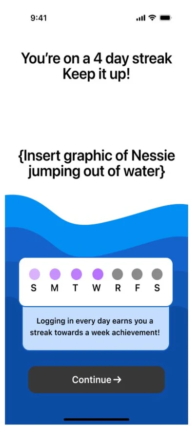
Wireframe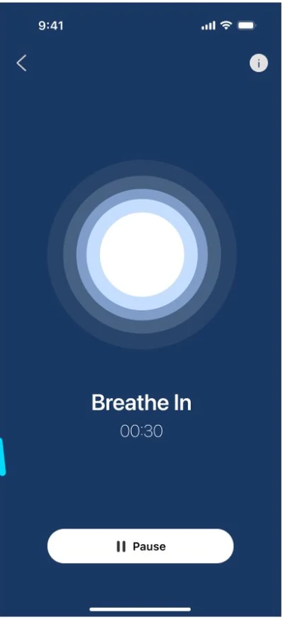
Wireframe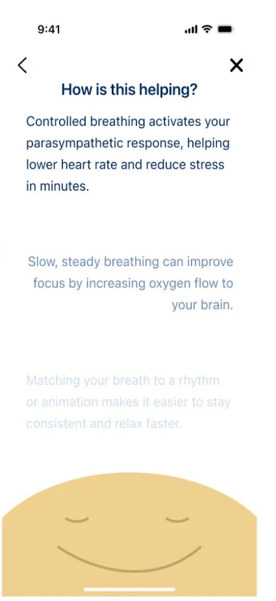
WireframeIllustrating Nessie
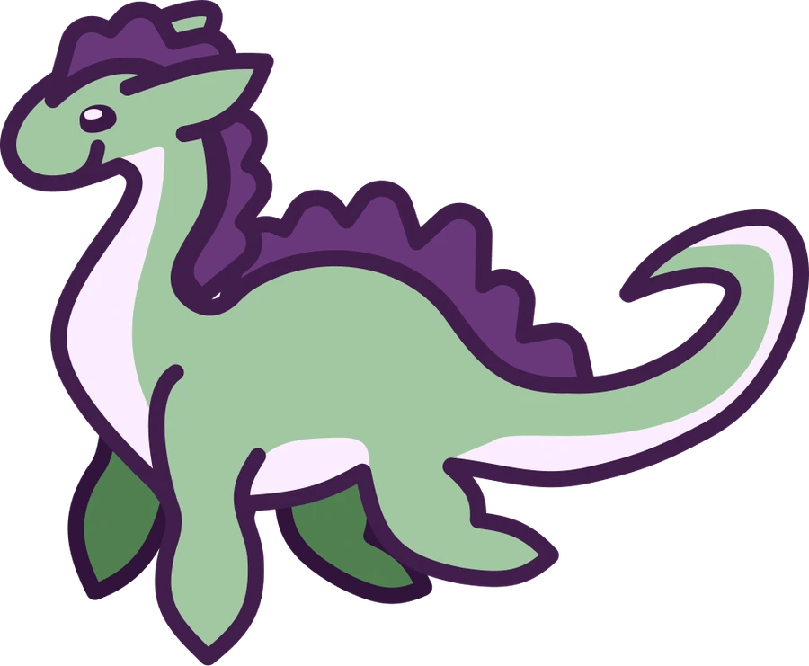
Nessie as a guide
Nessie walks users through the app, so I gave her an expression for each moment: overwhelmed in onboarding, peeking in to say hello, and leaping out of the water when you keep a streak.
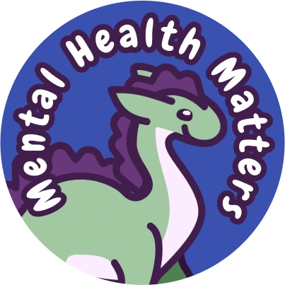
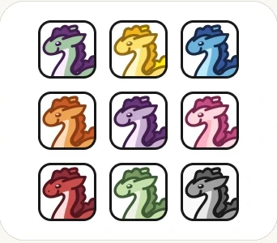
Nine profile icons
Users pick a Nessie instead of uploading a photo, so profiles stay personal and private.
The team's workflows
Together, we mapped five workflows around Faye's day: a daily checklist, quick stress relief, community, an end-of-day journal, and gentle reminders. I designed the breathing screens for quick stress relief, so a user can start a guided exercise in one tap and learn why it works.
Usability testing
We tested the prototype with three participants ages 18 to 22, using the think-aloud method and the System Usability Scale.
participants, from trade school to current college students
tasks: onboarding, home page, journal entry, profile icon, community post, and calendar
tasks completed by participants with little to no help
What we learned and changed
Users wanted more interaction
Every participant clicked beyond what we had prototyped, trying to write journal entries and join communities.
Working interactions
We added real interactions to the sign in, journal, community, and profile pages, including text boxes that actually type.
Users loved the points
Streaks, the info page, and group content got more excitement than we expected.
Game-style rewards
The streaks and achievements were redesigned to work more like a game's reward system, and I prototyped those screens and animations.
Outcome
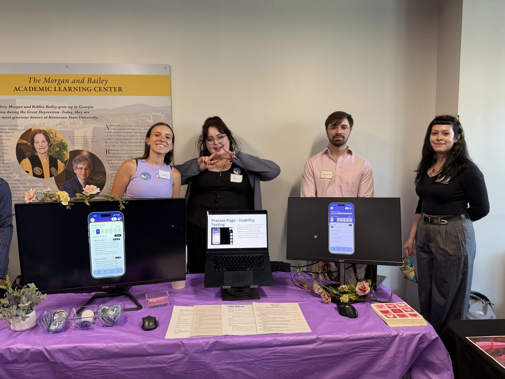
Going in, my goal was to build a functional application and better understand the Goal-Directed Design process.